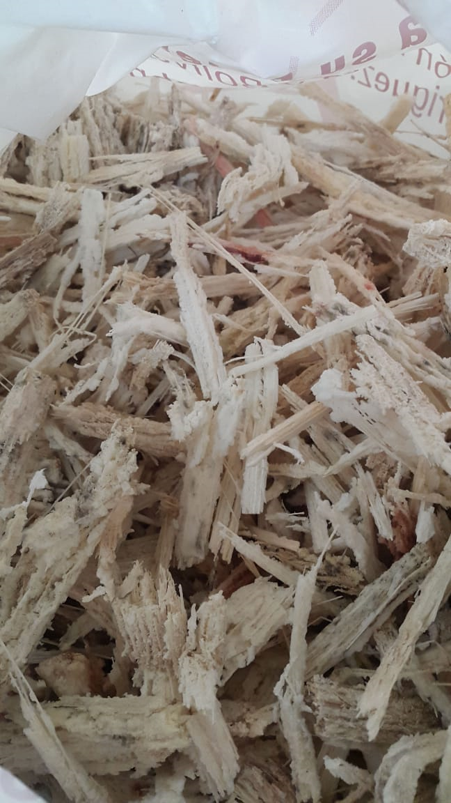

Material de partida: bagazo de caña de azúcar

Reconstruimos fibra textil mediante disolución no derivativa de la celulosa y posterior coagulación con la tecnología Wet-spinning en un proceso que no requiere de químicos nocivos para el ambiente.


La tecnología Dry jet-wet fiber spinning es una combinación de técnicas de wet-spinning (hiladura en húmedo) y en dry-spinning (hiladura en seco) para la formación de fibras aprovechando los beneficios de ambas tecnologías. La tecnología requiere hilado directo en un baño de coagulación. Esta pequeña diferencia en la disposición de la hilera (es decir, colocarla fuera del baño de coagulación) provoca una diferencia significativa en el rendimiento de hilatura y la estructura final de la fibra.